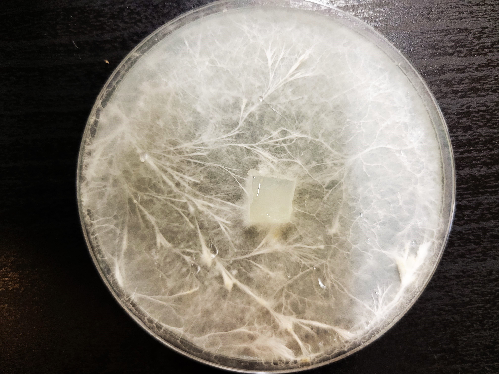
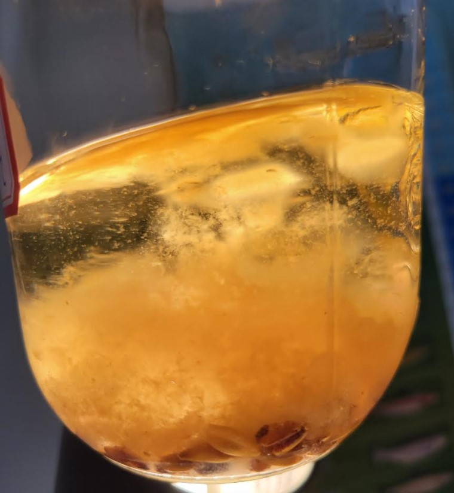
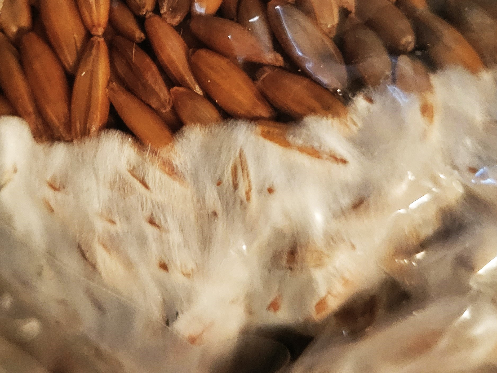
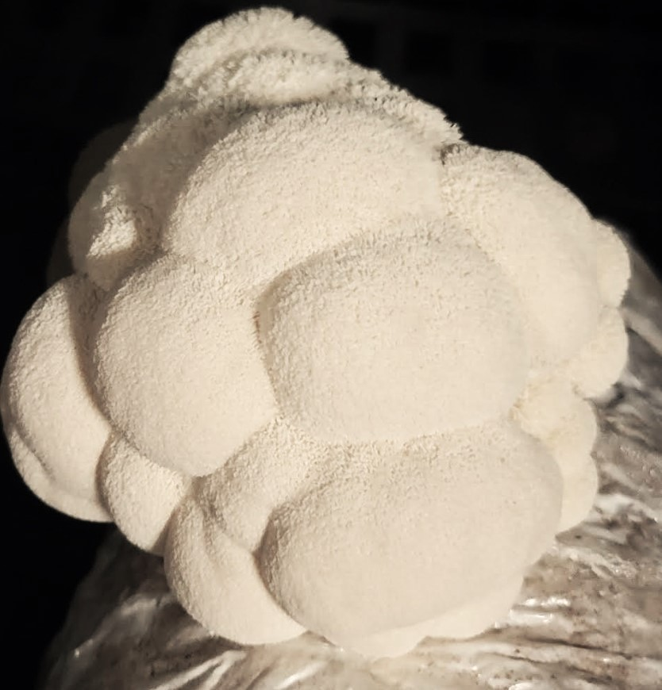

H. erinaceus mycelia growth on nutrified agar media via tissue culture.
The agar culture is expanded into a nutrified liquid medium. Expanding the growth exponentially.
Liquid Culture includes water, honey, nutritional yeast, soy peptone, and whole oats.
After 15 days the liquid culture is ready to inoculate sterilized grain spawn.
Sterilized whole oats are inoculated with 30ml of liquid culture. The grains will then be colonized by the mushroom mycelium in 20 days after inoculation.
Once grain has been fully colonized, it must be expanded into more grain, or transfered to fruiting substrate.
The final step of the process is to inoculate a blend of hardwood and soybean hulls, with the colonized grain spawn.
After 25 days, the colonized fruiting blocks are forming primordia, and are ready to be introduced to fruiting conditions.
Mushrooms will take 2-3 weeks to fully form. And will continue to produce mushrooms until the nutrients in the fruiting substrate are consumed.
